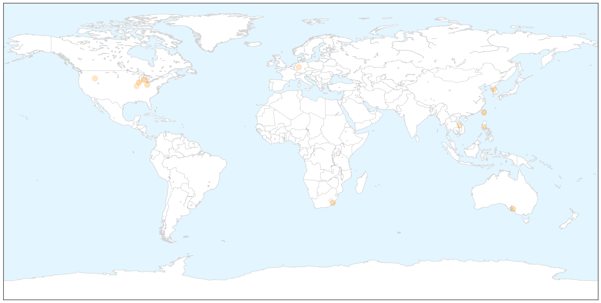

Cholera
30-Day Web Trend
5 alerts, 0 warnings

30-Day Twitter Trend
2 alerts, 0 warnings

Article Locations


Article Confidences

Top Articles:
- 0.998
- Haiti struggles to stem cholera as rains come early
- 0.995
- The most from the coast
- 0.988
- MSF concerned with the rapid spread of cholera in Kenya
- 0.976
- MSF concerned with the rapid spread of the cholera outbreak in Kenya
- 0.973
- Haiti Cholera Plaintiffs Appeal Ruling
- 0.881
- 70 in Jos hospitals after cholera, diarrhoea outbreaks
- 0.874
- Ghana Health Service To Step Up Public Education To Prevent Cholera Outbreak
- 0.670
- UN relief wing boosts emergency support to refugees fleeing Burundi crisis
- 0.586
- Kenya: Kenya: Cholera Emergency Plan of Action (EPoA) Operation n MDRKE033, EPoA update n 1
- 0.568
- Emergency support to refugees fleeing Burundi crisis
- 0.552
- Haitian government assumes very strong leadership in fight against Cholera
Top Tweets:
-
No tweets found for Jun 03, 2015
Influenza
30-Day Web Trend
0 alerts, 0 warnings

30-Day Twitter Trend
4 alerts, 0 warnings

Article Locations

X

Article Confidences

Top Articles:
- 0.998
- MERS Cases Rising in South Korea
- 0.996
- Sickness spikes early this year
- 0.996
- www.cowracommunitynews.com
- 0.980
- Bold new approach needed to defeat rabies
- 0.972
- What Dog Owners Should Know About Dog Flu
- 0.947
- South Koreans Mask Up In The Face Of MERS Scare
- 0.860
- Iowa, Minnesota report more avian flu; bird-show bans spread
- 0.839
- Michigan veterinarians must now report dog flu cases to the state
- 0.751
- June 3, 2015 Archives
- 0.751
- June 2, 2015 Archives
- 0.686
- How doctors choose their doctors
- 0.684
- Agriculture officials ask county fairs to beware of bird flu
- 0.630
- Disease outbreak risks increase in summer
- 0.501
- Five New US Bird Flu Outbreaks Confirmed; More Exhibits Cancelled
Top Tweets:
-
No tweets found for Jun 03, 2015